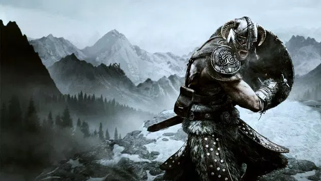
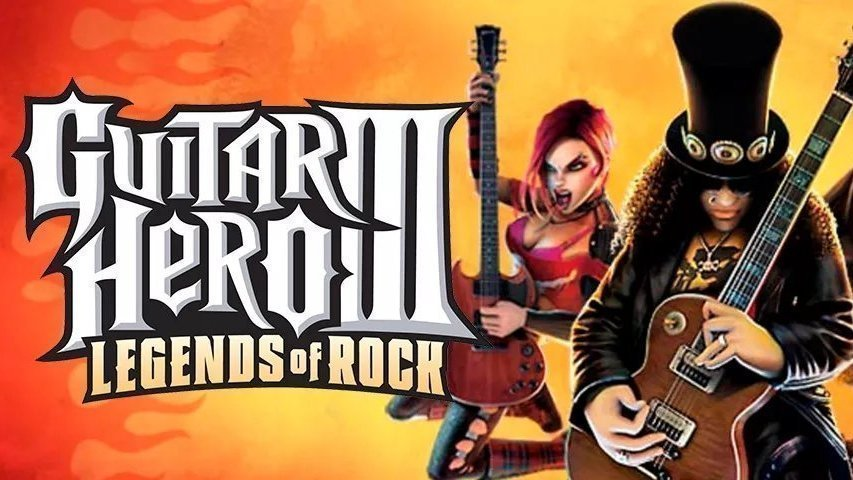

Skyrim

Skyrim Special Edition, ganador de más de 200 premios al "Juego del año", da vida a la fantasía épica con un nivel de detalle asombroso. La Special Edition incluye el juego aclamado por la crítica y los complementos, así como nuevas características: gráficos y efectos renovados, rayos crepusculares volumétricos, reflejos en tiempo real, profundidad de campo dinámica y muchas más. Además, Skyrim Special Edition lleva todo el poder de los mods a PC y Xbox One: nuevas misiones, entornos, personajes, diálogos, armaduras y armas, entre otras muchas cosas. ¡Con los mods, la experiencia no tiene límites!
Mass Effect Andromeda

Mass Effect™: Andromeda te lleva a la galaxia de Andrómeda, más allá de la Vía Láctea. Allí, encabezarás la lucha por un nuevo hogar en territorio hostil como pionero o pionera, liderando un grupo de exploradores con instrucción militar. Escribe el próximo capítulo en la historia de la humanidad: de tus decisiones dependerá su supervivencia.
Guitar Hero III

Guitar Hero III tiene casi todos los mismos componentes de juegos de Guitar Hero previos; los jugadores todavía usan un mando de guitarra que permite al jugador tocar las notas coloreadas que vienen en el diapasón en medio de la pantalla con la banda de fondo tocando la canción. Hay algunas pequeñas diferencias, más que nada en como las notas son tocadas. Estas diferencias incluyen que las notas de combo estrella también pueden ser Hammer Ons y Pull Offs para imitar mejor como un guitarrista real tocaría la canción. El alcance del diapasón tambien ha sido extendido, haciendo más fáciles las partes más complicadas.
Asassins Creed Valhalla